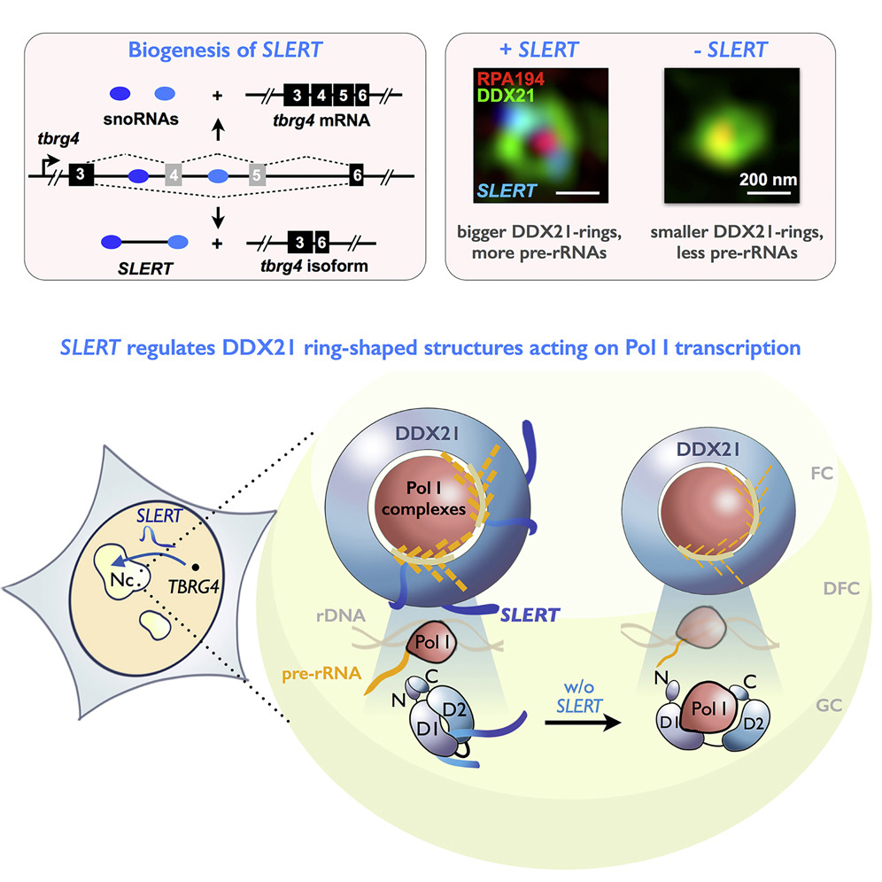
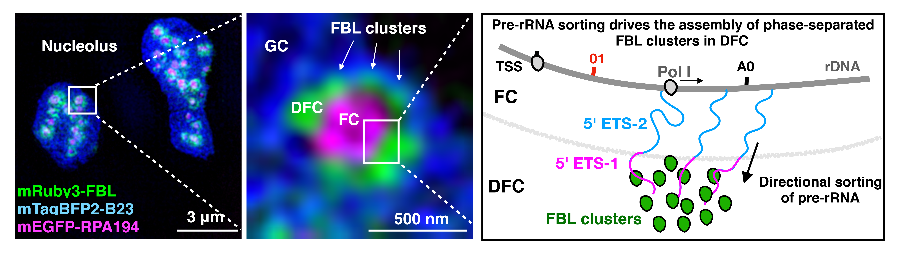

Biomolecular condensates have emerged as a fundamental mechanism by which cells organize biochemical reactions. Yet these structures are not homogeneous: they exhibit internal organization at the mesoscale (tens to hundreds of nanometers), where molecular interactions give rise to structured, dynamic architectures.
Increasing evidence suggests that these mesoscale features directly encode biochemical function. However, this regime remains difficult to access due to its small size, dense packing, and dynamic nature.
A major part of my research seeks to uncover how mesoscale organization is established and how it gives rise to function in living cells.In particular, I focus on how RNA molecules regulate condensate architecture through multivalent interactions and molecular scaffolding.
RNA as an architect of condensate organization
My early work asked a simple question: can RNA actively sh -roscopy with molecular and cell biology approaches to directly visualize how RNA organizes nuclear architecture.
I began by investigating SPA RNAs, a class of lncRNAs derived from the Prader Willi syndrome (PWS) locus. Using Structured Illumination Microscopy (SIM), I showed that these RNAs assemble into distinct nuclear condensates, PWS bodies, that act as “protein traps,” concentrating multiple RNA-binding proteins. This sequestration rewires protein availability and leads to widespread changes in alternative splicing programs (Molecular Cell, 2016). These findings demonstrated that RNA can directly organize functional compartments by controlling protein localization.
I then studied SLERT, a human nucleolar lncRNA that regulates ribosomal RNA transcription. Using super-resolution microscopy, I discovered that DDX21 forms ring-shaped assemblies surrounding Pol I complexes in the nucleolus, where they function as a structural brake on pre-rRNA transcription. SLERT binds DDX21 and loosens these ring assemblies, relieving their suppressive effect on Pol I and enhancing rRNA synthesis (Cell, 2017). This work revealed a mechanism by which RNA controls gene expression through remodeling higher-order protein architecture within a condensate.
Together, these studies establish a broader principle: RNA is not merely a passive component of condensates, but an active architectural regulator that shapes their internal organization, molecular composition, and functional output.

The nucleolus as a model of mesoscale function
To understand how spatial organization gives rise to function, I turned to the nucleolus—the largest biomolecular condensate in the cell (Molecular Cell, 2019).
Using multiple super-resolution microscopies including SIM, STED and STORM, I revealed that the nucleolus is a highly organized system composed of distinct mesoscale substructures. Individual nucleoli contain multiple active nucleolar organizer regions (NORs), each harboring a small number (typically 2–3) of transcriptionally active rDNA copies embedded within mixed chromatin states. These sites generate nascent pre-rRNA at the FC–DFC interface.
A central finding of this work is that nascent pre-rRNA undergoes directional sorting rather than passive diffusion. Newly transcribed RNA is actively routed from transcription sites into the DFC, where processing occurs. Within the DFC, processing factors such as FBL assemble into multiple discrete nanoscale clusters (“beads”) that define spatially organized processing hubs. We found that this sorting process is not merely guided by pre-existing structure, but is mechanistically coupled to condensate organization. Through perturbation and screening, we identified FBL as a key regulator: its intrinsically disordered GAR domain drives self-association into clusters, which capture and process incoming pre-rRNA. In turn, the continuous influx and sorting of RNA promotes the assembly and maintenance of these clusters.

Building on this framework, we identified a previously unrecognized nucleolar substructure, the PDFC, revealing a layered mesoscale organization within the nucleolus. This work further showed that distinct sub-regions within a condensate can coordinate specialized biochemical steps in space (Nature, 2023).
These findings suggests a principle: condensates are structured systems that actively direct molecular flow, rather than passive containers.
Extending mesoscale organization beyond the nucleus
These principles are not restricted to nuclear condensates, but extend to other cellular contexts. In collaborative work, I explored how condensate-like organization appears in diverse systems.
For example, imaging of purinosomes revealed their dynamic assembly and disassembly in cells, suggesting a regulated organization of metabolic enzymes (Science, 2025). Similarly, studies of nuclear bodies such as paraspeckles have linked their internal organization to cellular stress responses (Nature Cell Biology, 2018).
Together, these observations suggest that mesoscale organization may represent a broader strategy by which cells spatially coordinate biochemical processes across different compartments.